PREFACE:
The surface-related uranium (U) layers are a collection of national datasets providing a framework for understanding potential uranium mineralisation in the near-surface environment. Uranium deposits may be broadly divided into three main uranium mineralising systems; including (1) magmatic-related, (2) metamorphic-related, and (3) basin- and surface-related (Figure 1).
This data collection will assist with exploration for surface-related uranium mineralisation, particularly with valley calcrete hosted ‘surficial’ uranium deposits. However, the distribution of uranium as mapped by airborne gamma-ray spectrometry also includes bedrock materials where they are exposed at the surface.
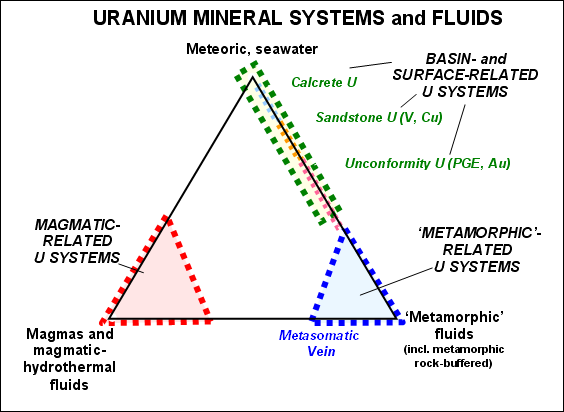
Figure 1. Scheme of three families of uranium mineralising systems, and three end-member fluid types. A continuum of deposit styles may exist between these end-members, represented by hybrid styles of uranium mineralisation. Surficial mineralising systems (including Calcrete) are shown in the upper right. (Modified from Skirrow et al. 2009)
The surface-related uranium layers have been complied by integration and analysis of three principal datasets -including the 1:1 million surface geology map, gamma-ray imagery from the Radiometric Map of Australia and a 90m digital elevation models from the Shuttle Radar Topography Mission (SRTM). A list of these datasets and what they show in relation to surface–related uranium mineralisation is provided in Table 1, and more detailed descriptions of the individual datasets are available below.
Table 1. Datasets and descriptions
Datasets |
Description |
|
| Terrain | ||
|
Topographic Gradients: Multi-resolution Valley Bottom Flatness (MRVBF) index with Low Flat clipping image. |
Digital elevation model derivative highlighting valley floors. Useful in delineating potential valley and palaeo-valley systems based on surface morphology. The MRVBF (low flat) clip highlights flat low lying areas. |
Australian hill-shade |
Hill shaded digital elevation model. Provides a landform framework to interpret the other datasets. Useful in delineating erosional and depositional landscape elements. |
|
| Geology | ||
|
Calcrete | Extracted from the surface geology map. Shows outcropping calcrete deposits |
| Gamma-ray spectrometry data | ||
| Uranium (U) | Airborne uranium channel data in ppm |
|
Uranium2/Thorium (U2/Th) median for geology polygons |
U2/Th is a useful ratio for highlighting areas of potential secondary uranium mineralisation. A median ratio value for each geological polygon is calculated using zonal statistics. |
|
U2/Th ratio (enhanced) and U2/Th ratio (clipped) |
U2/Th is a useful ratio for highlighting areas of potential secondary uranium mineralisation. The clipped ratio highlights the highest values. |
|
Information on Terrain morphology is derived from 2 different resolution Digital Elevation Models (DEM). The first is the 9-arc second Digital Elevation Model of Australia (~250m resolution) constructed from contours, spot heights and drainage enforcement, and the second is the 3-arc second DEM (~90m resolution) from the Shuttle Radar Topography Mission (SRTM) - which will be available shortly from Geoscience Australia. The latter is not a bare earth model and therefore includes tree heights as well as ground surface elevations. The elevation models provide a landscape context, or framework, to help interpret the distribution of uranium in the landscape (as described by airborne radiometrics).
MRVBF
The Multi-resolution Valley Bottom Flatness (MRVBF) index highlights variations in landform flatness (Gallant & Dowling, 2003). This version of the MRVBF model uses the 9-arc second DEM. The MRVBF index is useful in identifying depositional landforms (valley bottoms) based on their distinctive topographic signature as flat, low-lying area. The identification of valley bottoms is assessed at multiple scales allowing local valley floors in hilly terrain to be separated from more extensive alluvial and colluvial plains. Red hues in the image generally correlate to hilly, erosional landforms and blue hues to depositional landforms. There are exceptions to this relationship but, in general, this relationship holds true for many landscapes. Two versions of the index are presented, the first (MRVBF – topographic gradient) shows the full graduation of colour from red to blue hues, and the second (MRVBF- topographic gradient low flat) has been clipped to highlight mainly depositional areas or landforms. Many palaeo-channel systems in central Australia are highlighted by the MRVBF index. Therefore the MRVBF index, together with other thematic layers, could potentially highlight valley-calcrete uranium deposits or more generic groundwater related uranium processes. The index is also useful in identify topographic or valley constrictions where the MRVBF image shows a marked change from broad low relief/flat areas to narrow tapering zones.
| 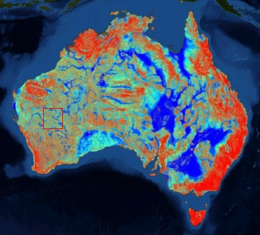 MRVBF - topographic gradient - with detail area highlighted |
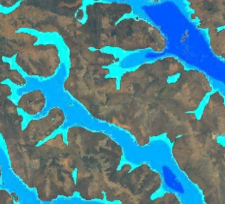 |
Hillshaded DEM
The hill shaded model is based on the 3-arc second SRTM digital elevation model. The hill shade was generated in ER Mapper using a North-West sun angle. The image highlights landform features and provides a landscape framework to better understand potential uranium anomalies in the other datasets.
| 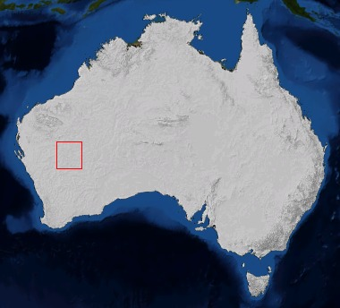 Hill Shaded Digital Elevation Model - with detail area highlighted |
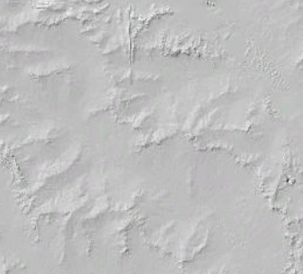 |
The Surface Geology of Australia is a seamless national coverage of outcrop and surficial geology, compiled at 1:1 million scale. The data maps outcropping bedrock geology and unconsolidated or poorly-consolidated regolith material covering bedrock.
Calcrete
Calcrete is a indurated (hardened) deposit of calcium carbonate, it can also be refered to as Caliche or Kankar. Calcrete can provide a host to uranium mineralisation, for example the Yeelirrie deposits in Western Australia (Wilford et al. 2009). The calcrete layer was derived from the surface geology map. It highlights only surface exposed calcrete materials.
| 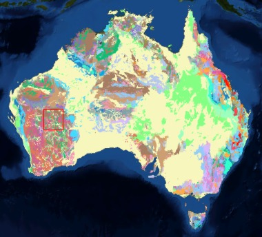 Surface Geology - with detail area highlighted |
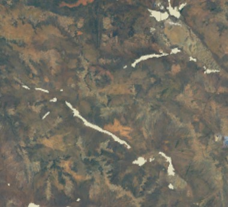 Calcrete shown in white - Detail |
Gamma-ray spectrometry data layers are derived from the Radiometric Map of Australia. The map shows the distribution of potassium (per cent K), uranium (parts per million (ppm) equivalent U) and thorium (parts per million (ppm) equivalent Th) over 80 per cent of the Australian landmass. It has been calibrated using the recent Australia-Wide Airborne Geophysical Survey (AWAGS) to adjust all the public-domain airborne radiometric surveys in Australia to the International Atomic Energy Agency’s (IAEA) Global Radioelement Datum (Minty et al. 2009).
Uranium
The Uranium (U) channel data shows uranium concentrations (parts per million (ppm) equivalent U) derived from airborne radiometric measurements. Uranium data can be analysed and compared across the Australian continent.
Uranium2/Thorium Ratios
The Uranium2/Thorium (U2/Th) ratio can be an effective way of separating primary uranium, associated with uranium-bearing granites, from secondary uranium associated with paleochannel calcrete (Wilford et al. 2009). High U2/Th ratio values are associated with many secondary uranium deposits in Australia and can be used to highlight new areas of potential mineralisation. The U2/Th ratio layer in the surface-related uranium dataset has been stretched (enhanced) to more effectively separate high values (reds) from low values (blues and greens). The additional (clipped) version of the U2/Th ratio delineates higher values that may be associated with uranium mineralisation.
| 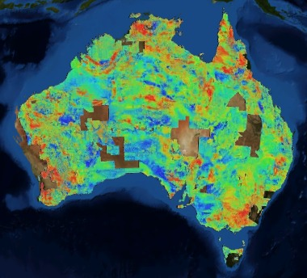 Secondary uranium radioelement concentrations derived from the Radiometric Map of Australia (2nd Edition) |
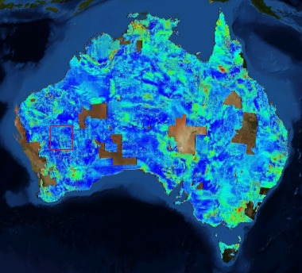 |
| 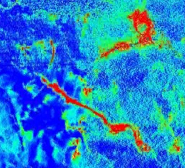 Uranium2/Thorium Ratio (enhanced) - Detail |
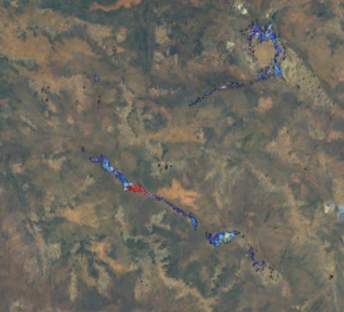 Uranium2/Thorium Ratio (clipped) - Detail |
Uranium2/Thorium median for geology polygons
This layer shows median Uranium2/Thorium values for each geological polygon based on the 1:1M surface geology map of the continent (Raymond, 2009). The theme was generated using zonal statistics techniques in ArcGIS.
| 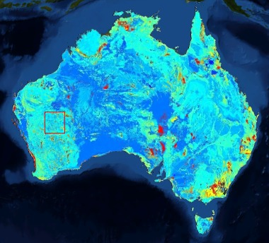 Uranium2/Thorium median for geology polygons - with detail area highlighted |
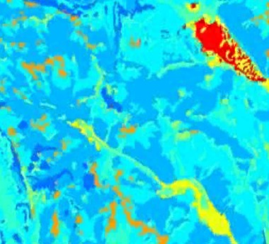 Uranium2/Thorium median for geology polygons - Detail |
Further information can also be found at: http://www.ga.gov.au
Published by Geoscience Australia, Department of Resources, Energy and Tourism, Canberra, Australia. Issued under the authority of the Federal Minister for Resources, Energy and Tourism.
 © Commonwealth of Australia (Geoscience Australia) 2010.
© Commonwealth of Australia (Geoscience Australia) 2010.
This material is released under the Creative Commons Attribution 3.0 Australia Licence.http://creativecommons.org/licenses/by/3.0/au/
The primary data from which the Surface-related Uranium images have been derived may be downloaded from the
Geoscience Australia internet site at:http://www.ga.gov.au/resources/maps/mapsofaustralia.jsp
or by contacting:
Sales Centre, Geoscience Australia
Cnr Hindmarsh Dr and Jerrabomberra Ave, Symonston, ACT
GPO Box 378, Canberra, ACT 2601
Phone: (02) 6249 9966 Facsimile: (02) 6249 9960
Email: sales@ga.gov.au